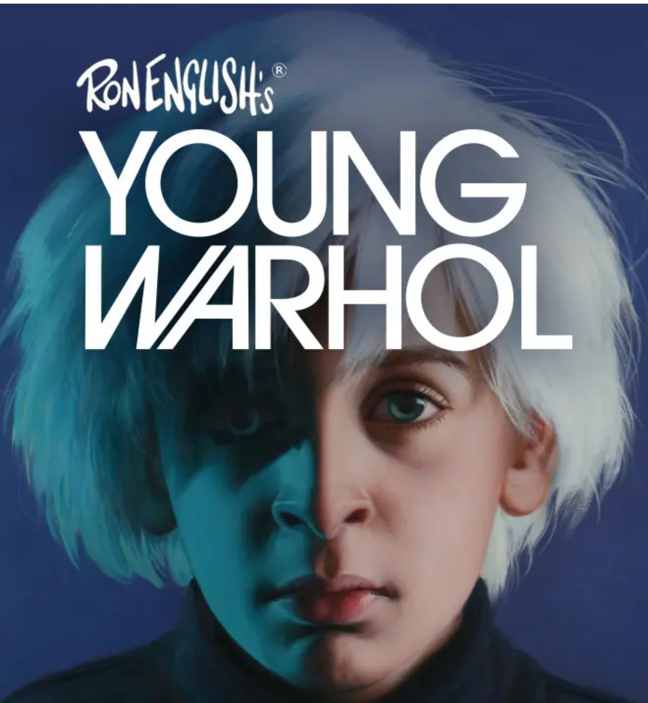

VeVe Artworks: David Warhol / Young Warhol documents a small VeVe release centered on Ron English’s David Warhol, a 1-of-1 Artist Proof sold through silent auction in August 2022. Young Warhol is documented as a related promotional airdrop tied to participation in the David Warhol auction.

David Warhol
VeVe Artworks 1-of-1 Artist Proof offered by silent auction.

Young Warhol
Promotional airdrop related to participation in the David Warhol auction.